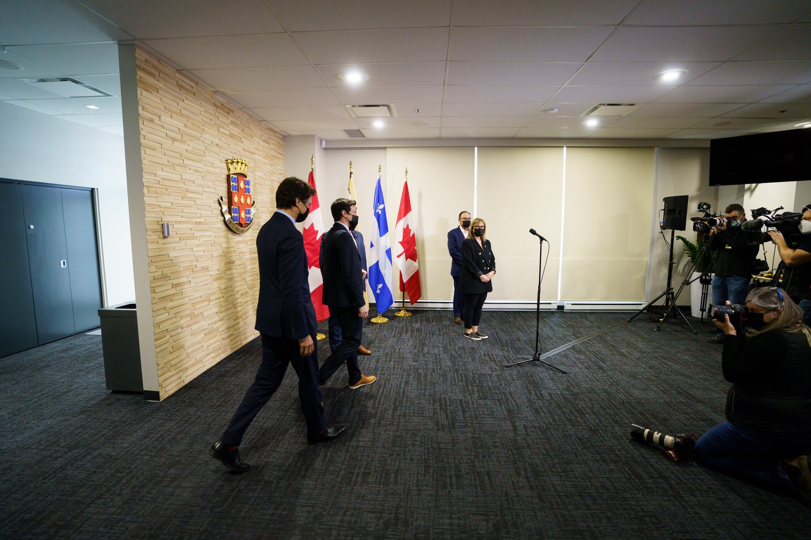

What's Happening?
What's Happening?
Il est de plus en plus difficile pour les jeunes d’accéder à la propriété. C’est le cas dans tout le pays. C’est pourquoi, avec le #Budget2022, on cherche à rendre le logement plus abordable et à redonner aux gens les moyens de devenir propriétaires. https://bit.ly/3rr7EHb
